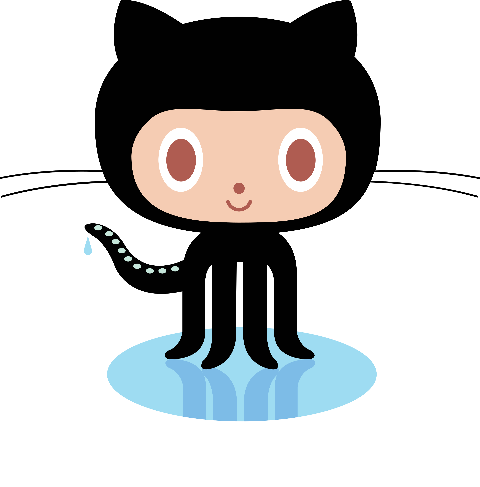

All About GitHub
What is a version control?
- Version control is something that keeps track of the changes you have made, be it data, code, images, etc.
-
What is Git?
- Git is a free and open source distributed version control system designed to handle everything from small to very large projects with speed and efficiency.
-
What is GitHub?
- GitHub is a website and cloud-based service that helps developers store and manage their code, as well as track and control changes to their code.
-
What is the difference between Git and GitHub?
- Git is a version control system that lets you manage and keep track of your source code history. GitHub is a cloud-based hosting service that lets you manage Git repositories.
-
Who started GitHub and how was it started?
- Wanstrath and Preston-Werner needed GitHub for their own work, and so they developed their tool(GitHub) out of necessity.
-
What company owns it now?
- GitHub is now owned by Microsoft.
-
How much does a GitHub account cost?
- A GitHub account can be free, however, if you desires more features, you can pay up to $21 monthly to access those features.
-
What is Octocat?
- Octocat is the mascot of GitHub.
-
Git/GitHub terms:- repository: A repository is the most basic element of GitHub. They're easiest to imagine as a project's folder. A repository contains all of the project files (including documentation), and stores each file's revision history. Repositories can have multiple collaborators and can be either public or private.
- commit: A commit, or "revision", is an individual change to a file (or set of files). When you make a commit to save your work, Git creates a unique ID (a.k.a. the "SHA" or "hash") that allows you to keep record of the specific changes committed along with who made them and when. Commits usually contain a commit message which is a brief description of what changes were made.
- fork: A fork is a personal copy of another user's repository that lives on your account. Forks allow you to freely make changes to a project without affecting the original upstream repository. You can also open a pull request in the upstream repository and keep your fork synced with the latest changes since both repositories are still connected.
- push: To push means to send your committed changes to a remote repository on GitHub.com. For instance, if you change something locally, you can push those changes so that others may access them.
- pull requests: Pull requests are proposed changes to a repository submitted by a user and accepted or rejected by a repository's collaborators. Like issues, pull requests each have their own discussion forum.
- workflows: A workflow is a configurable automated process that will run one or more jobs. Workflows are defined by a YAML file checked in to your repository and will run when triggered by an event in your repository, or they can be triggered manually, or at a defined schedule.
- issues: Issues are suggested improvements, tasks or questions related to the repository. Issues can be created by anyone (for public repositories), and are moderated by repository collaborators. Each issue contains its own discussion thread. You can also categorize an issue with labels and assign it to someone.
- raw button: With the raw view, you can view or copy the raw content of a file without any styling.
- blame button: The git blame command is used to examine the contents of a file line by line and see when each line was last modified and who the author of the modifications was.

|
{kind=link}